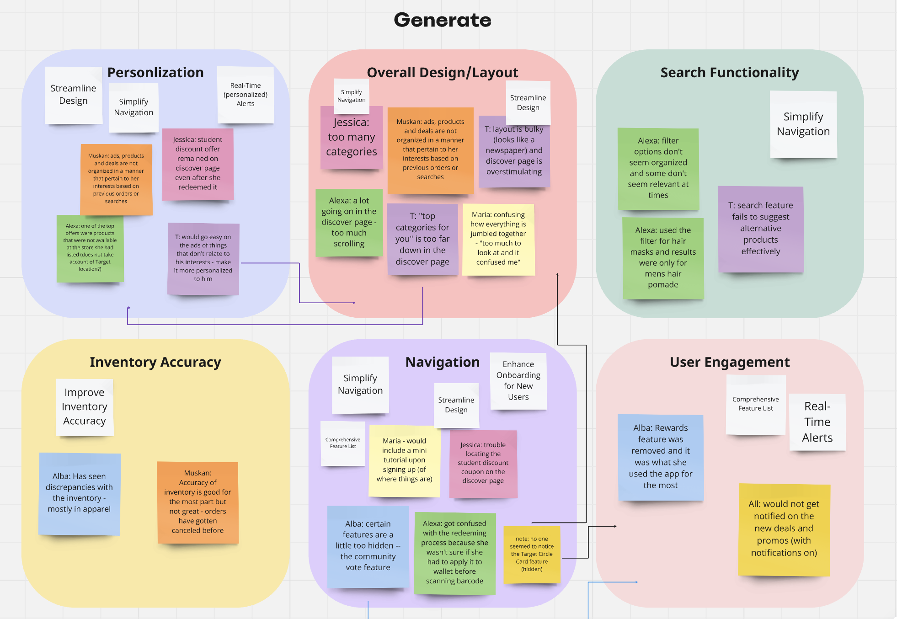
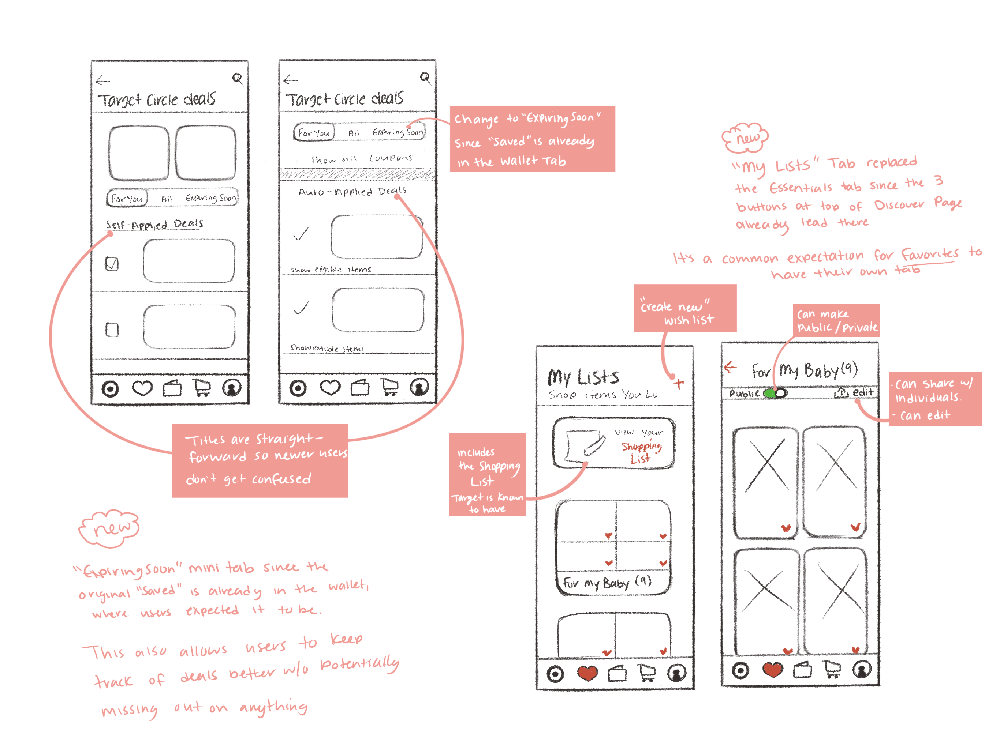
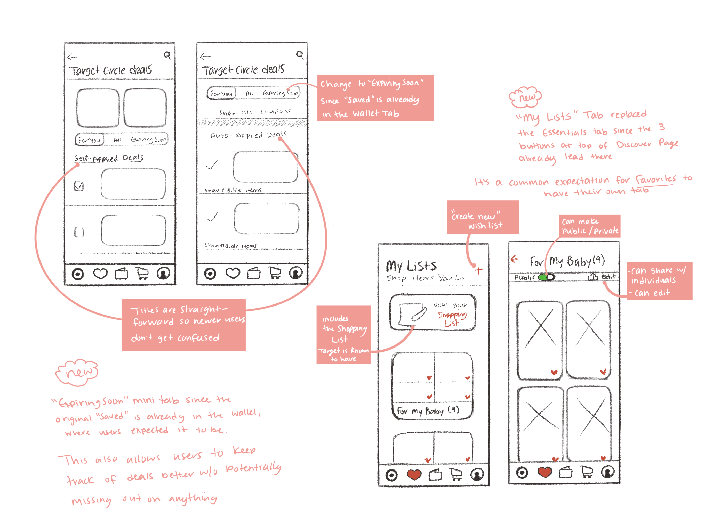

TARGET CIRCLE
Target Circle is Target's free loyalty program designed to go beyond the benefits of in-store shopping by offering exclusive deals, rewards, and tailored offers that cater to each user's preferences. Ultimately, their goal is to ensure every Target shopping spree is a rewarding and convenient interaction.
Project Overview
Role: UX Researcher and Designer
Project Goal: My goal for this project was to redesign the Target Circle App in order to provide a more personalized, intuitive, and satisfying experience for both new and experienced users on a prominent shopping platform.
Approach: Bottom-Up — Preserve Target's iconic aesthetic as much as possible, while implementing thoughtful adjustments to enhance navigation and user engagement.
DISCOVER & DEFINE
Exploratory User Research
Research Goals
- Identify Pain Points: Understand the common challenges and frustrations that users face when navigating the app.
- Undertsand User Needs and Behaviors: Explore the specific needs, goals, and behaviors of both new and experienced users.
- Benchamrk Expectations: Assess the common user expectations for shopping apps and compare them with industry standards.
- Evaluate Personalization: Determine how well the app delivers personalized experiences based on user preferences.
User Needs
Users of the Target Circle app, regardless of their familiarity with it, need an experience that
- Is personalized to their needs and shopping habits.
- Is easy to navigate with a clear and uncluttered design.
- Features a reliable and efficient search/filter system to locate products with ease.
- Provides engaging features that encourage repeat visits and continual use.
Goals
What users hope to achieve through the app:
- Save Money on Purchases: Users hope to easily discover and apply the best deals, discounts, and exclusive Target Circle offers.
- Convenient Product Management: Users seek an app that simplifies the process of searching/filtering the products that match their preferences. They wish to maintain wishlists, track purchase history, and manage saved offers in just a few clicks.
To focus my redesign efforts, I synthesized the common user pain points into two core problem areas.
Problem
- Hidden Features
- Confusing Filtering and Categorization
Solution
Simplify Navigation and Filters: Redesign the app's menus, layout order, and filtering options to be more intuitive.
- Group related items together logically
- Use clear labels and visual cues
- Organize to fit industry standards
Goal
Reduce cognitive overload, make it easier for users to find what they’re looking for, and encourage deeper engagement with the app through exploration.
Problem
- Cluttered layout
- Lack of personalized content
- Limited customization options
Solution
Streamline Design: Create a visually appealing and less cluttered interface.
- Use white space effectively
- Remove repititive information
- Prioritize the display of personalized content
- Add a customizable feature
Goal
A more inviting experience that enhances readability and reduces the sense of overwhelm for users. Additionally, have increased user engagement by fostering a more social and enjoyable atmosphere within the app.
User Interview Reflections
Information I gathered from the research phase: I conducted a total of 6 interviews, all users ranging between the ages of 15-50. This age range was intentionally broad to ensure I captured a diverse range of perspectives.
Through the interviews, I discovered three primary user types:
- Experienced Users - Regular Target shoppers familiar with the app
- Inexperienced Users - New or infrequent users with limited app interaction
- Tech-Savvy Users - New to Target, but highly familiar with other e-commerce apps
Each group contributed unique perspectives:
- Experienced Users highlighted a surprising insight: even seasoned app users had missed key features — revealing that important tools were hidden or not intuitive in the interface.
- Inexperienced Users helped identify confusing areas, unclear labels, and features they expected to be in different places.
- Tech-Savvy Users gave insights into what other apps are doing well, and helped reveal expectations around layout, personalization, and navigation.
Despite the vast areas of expertise, all users shared common goals and pain points, which sparked the idea for this prototype.
DEVELOP
Design Process
Skillset
- User Research - conducting interviews, usability testing, analyzing feedback/results.
- Information Architecture - Structuring and organizing content for intuitive navigation.
- Wireframing and Prototyping - using tools to create wireframes and interactive prototypes.
- Visual Design - maintaining a cohesive and aesthetically pleasing interface, aligning with Target's brand image.
- Usability Testing and Iteration - Testing prototypes with users to gather feedback and make iterative improvements.
Tools Used
• Figma • Miro • iPad (Procreate)
User Personas
Understanding the audience that the Target Circle app may attract
The Eco-conscious Mom
Goals:
- Save $ without compromising on quality
- Discover sustainable and eco-friendly brands
- Simplify the shopping process
- Balance shopping tasks with a busy work/family life
Needs:
- Organization
- Efficient search/filter function
- Clear and straightforward instructions or onboarding
- Personalized deals

The Tech-Savvy Minimalist
Goals:
- Save time while shopping
- Find best deals on home, decor, and essentials
- Test out Target Circle's features
Needs:
- Clean, streamlined interface with minimal clutter
- Personalized promotions
- Easy way to track spending/rewards
- Real-Time Alerts
Affinity Diagram
Wireframing
With all this information gathered, I was able to start brainstorming my ideas through wireframes. reating wireframes is a critical step in the development phase of any design, as it serves as a foundation for the final product (think blueprint). This step helps hyperfocus on the functionality/interface rather than the aesthetics. Making it pretty would only be the next step.
 

DELIVER
Prototyping
Discover Page
- Implemented new menu options
- Prioritized personalized items
- Enhanced visual cues
"My Target" tab
- Organized to remain consistent with industry standards and common user expectations
- Prioritized personalized items
- Used clear labels and visual cues
"My List" tab
- Meets user expectations
- Contains customizable features
- Is easier to find
Target Circle Deals
- Added straightforward labeling
- Removed repetitive information
- Joined related items
- Added the "Expiring Soon" tab, which is information that was previously difficult to find
Reflection
This project was a great opportunity to tackle some of the main pain points users had, like hidden features, clutter, and a lack of personalization. By working through wireframes and prototypes, I focused on making the app easier to navigate, more personalized, and cleaner overall. Things like clearer labels and making key tabs easier to access were small but impactful changes. Getting feedback from users helped me fine-tune the design and make it more intuitive. Overall, this project really showed me how important it is to keep the user in mind and how small tweaks can make a big difference in the experience.
Challenges I Faced
Figuring out what to do with and how to organize all the information without getting overwhelmed myself was a bit of a task. I didn't want to take something that was clearly visible in the original design and hide it just for the sake of making something else more visible.
Solution: I believe that implementing a more accurate algorithm will help with the cluttering and prioritize mainly what the user wants to see first.